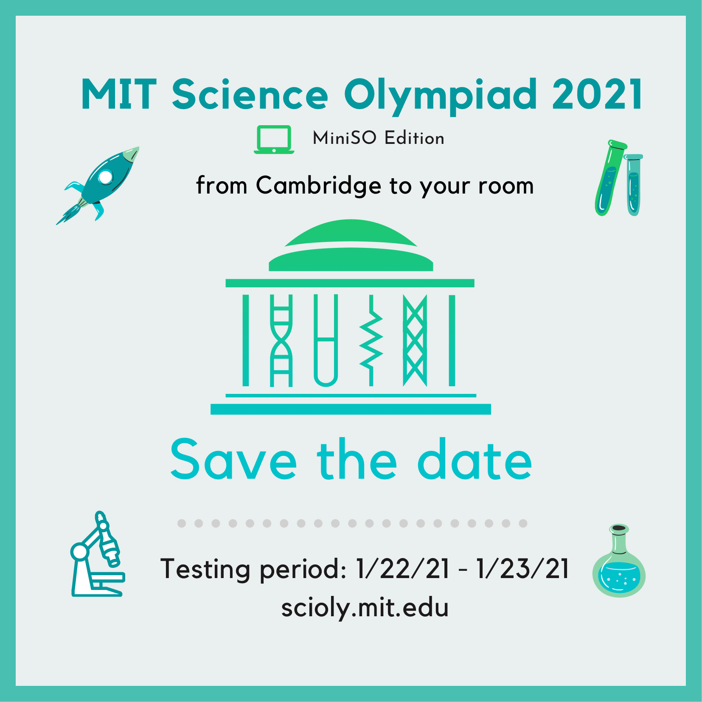

February 19, 2021
Thanks to all teams who participated in the 2021 MIT Science Olympiad Invitational! Final scores, exams, answer keys, and other followup items have been posted to the results page.
Thanks to all teams who participated in the 2021 MIT Science Olympiad Invitational! Final scores, exams, answer keys, and other followup items have been posted to the results page.
With the 2021 MIT Science Olympiad Invitational approaching soon, we’ve released a Competitor Guide to provide answers to tournament-specific questions and serve as a main hub for resources regarding our virtual tournament. In addition, we’re continuing to update the Event Information page, where trial event rules and other event-specific information or clarifications can be found.
Please be sure to check out both of these resources for up-to-date information regarding our virtual tournament!
MIT Science Olympiad is pleased to announce the opening of our event supervisor application for the 2021 MIT Science Olympiad Invitational on January 22nd & 23rd, 2021.
Application for first-time event supervisors (i.e. you haven’t supervised for MIT before)
Application for returning supervisors
Applications will close at 11:59 PM ET on October 2nd, 2020.
Hope to see you apply!
We are pleased to announce that the 7th annual MIT Science Olympiad Invitational Tournament will take place virtually on Friday, January 22nd, and Saturday, January 23rd, 2021. Following the mini SO model, we will be running 18 of the regular 23 Division C national events on Scilympiad and providing competitors with the flexibility to take tests any time in a 48-hour testing window.
All events will be written, reviewed, and run by Science Olympiad alumni currently at MIT, national tournament event supervisors, and/or former Science Olympiad competitors from the highest level of competition. This means that coaches will not be required to write tests or otherwise volunteer at the invitational, leaving them free to focus solely on coaching their own teams.
Registration will open on Saturday, September 12th, 2020, at 6PM ET. More details can be found on our Registration page.
As we continue to grow our tournament, we aim to maintain a diverse pool of competitors while also upholding the rigor of our tournament. As such, we strongly encourage all teams to apply, regardless of their reputation or experience level. Registration is currently limited to one team per school but please indicate whether you would be interested in having a second team on the registration form.
Further details about implementation will be released closer to the tournament. Please do not hesitate to contact us if you have any questions, and follow us on Facebook and Instagram to stay up-to-date with our team.
We look forward to the upcoming season!
